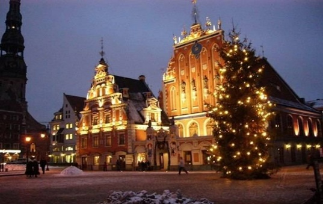

Новый год (1 января). Как и везде в мире , в Норвегии новый год – это семейный праздник. Каждая семья встречает его дома за праздничным столом, с многочисленными обычаями и традициями, присущими этой стране. Перед Новым годом большинство норвежцев идут в церковь, чтобы получить благословение в наступающем году. Застолье, как и в России, обычно начинается задолго до полуночи и продолжается до самого утра. Незадолго до полуночи начинается фейерверк, который начинает расти с каждым часом, и достигает апогея к 12 часам.